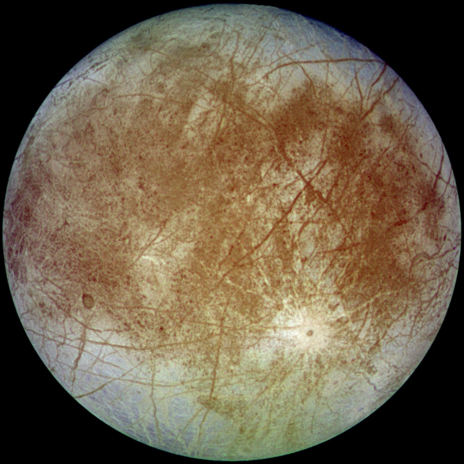

Satelit Galilean Yupiter
Europa merupakan satelit alami terkecil dari empat bulan Galilean yang mengorbit planet Yupiter. Ditemukan oleh Galileo Galilei pada tahun 1610, Europa memiliki permukaan berupa kerak es air yang sangat halus dengan sedikit kawah impak, terpotong oleh garis-garis retakan silang (lineae). Di bawah kerak es tebalnya, diperkirakan terdapat samudera air cair global yang memiliki volume air dua kali lipat lebih banyak dibandingkan seluruh lautan di Bumi. Interaksi pasang surut gravitasi dengan Yupiter menjaga interior Europa tetap hangat melalui pemanasan pasang surut (tidal heating), menjadikannya salah satu kandidat lokasi paling menjanjikan dalam pencarian kehidupan ekstraterestrial di Tata Surya.